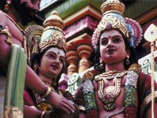

RC220A
World Religious Traditions I
Week 2: Hinduism, the Inseparability of Religion and Culture
2.1 Overview and Outcomes
Overview
This week we will study Hinduism, or Sanatana Dharma, eternal truth, as the Indians prefer to call it. Sanatana Dharma is the religion of approximately 85% of the population of India. Its roots are in the Indus River valley settlement from c. 2500 BCE.; however, many Indians believe that its origins are from 5-10 000 years ago. Over a period of time, there were migrations of diverse tribes who intermixed with the original agrarian settlers, contributing their religious beliefs. Originally an oral tradition, the sacred texts of the Vedas, followed approximately 500 years later by the Upanishads, and then the Laws of Manu combined and evolved into the Hindu belief system recognized today.
Because of its long and comparatively stable history, in which it was contributed to but never supplanted by another religious system, Hinduism is integrated at the very heart of Indian culture. It is, basically, inseparable from the cultural psyche, forms, and ethics. The following quote from Mohandes Gandhi, one of the great Indian socio/political figures of the twentieth century, points out Hinduism's unique qualities. "Hinduism is not an exclusive religion. In it there is room for the worship of all the prophets in the world. For me Hinduism is all-sufficing. Every variety of belief finds protection under its ample cloak... My Hinduism is not sectarian. It includes all that I know to be best in Islam, Christianity, Buddhism and Zoroastrianism... Truth is my religion and ahimsa [Non-violence; in its positive aspect-love for all living things] is the only way of its realization" (http://www.mkgandhi.org ).
In this way Hinduism may be viewed as a "universal religion," which can be confusing to students from a Judeo/Christian, monotheistic culture. We expect, particularly in religious belief systems, directions on what and how to believe, as well as a well-defined path of worship.
Outcomes
Upon completing this week you will be able to:
- Describe the historical and geographical context of Hinduism.
- Explain the nature of Brahman, ultimate reality, as related to the nature of self, atman.
- Define the Sanatana Dharma key beliefs of samsara, karma, reincarnation and moksha and explain their relationship.
- Relate the key spiritual principles to the structure and conduct of Hindu daily life.
- Discuss the origin of the caste system, its levels of society, how it impacted traditional ethics and the current situation.